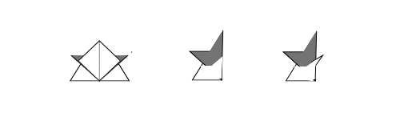

Rikishi
Rikishi are Japanese sumo wrestlers. If you make two of these, you can have a sumo match with your friend! Let's give it a try!

- Fold the paper in two in the middle and fold it in two again.
- Fold the four corners inward.
- Turn the paper over and fold it from left to right toward the center.
- Turn the paper over again, spread the bottom part and fold the top part.
- Turn over and fold in the top, then reopen the folded part.
- Fold in half toward the center line and form the back belt, and you are done!

COLUMN
Make two of Rikishi Origami, then you can play a sumo match.